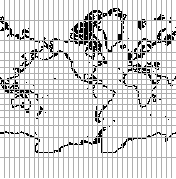
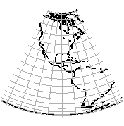
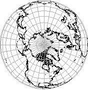
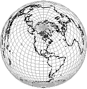

The following examples use d.auto.viewproj, which automatically adjusts the region and sets the projection parameters for the requested view projection.

A Mercator map
n=85.0 s=-85.0 e=449.5 w=90.5
proj=merc ellps=wgs84 lon_0=-90.0
g.region n=90 s=-90 e=450 w=90
d.erase color=white
d.auto.viewproj projname=Mercator
d.mon.viewproj
d.vect.viewproj map=coastlines color=black
d.grid.viewproj size=10
An Albers Equal Area map
n=85.0 s=-85.0 e=-45.0 w=-135.0
proj=aea lon_0=-90.0 lat_0=0.0 lat_1=28.33 lat_2=42.5g.region n=90 s=-90 e=450 w=90
d.erase color=white
d.auto.viewproj projname=AlbersEqualArea
d.mon.viewproj
d.vect.viewproj map=coastlines color=black
d.grid.viewproj size=10
An Orthographic polar map
n=90.0 s=0.0 e=450.0 w=90.0
proj=ortho ellps=wgs84 lon_0=-90.0 lat_0=90.0
g.region n=90 s=0 e=450 w=90To retain more control over the view projection, d.set.viewproj may be used instead of d.auto.viewproj. The user must set the parameters required by the projection. The user must also set the region appropriately for the projection.
d.erase color=white
d.auto.viewproj projname=Orthographic
d.mon.viewproj
d.vect.viewproj map=coastlines color=black
d.grid.viewproj size=10

A Lambert Azimuthal Equal Area map
Oblique Aspectg.region n=89.95 s=-89.95 e=450 w=90
d.erase color=white
d.set.viewproj proj=laea ellps=WGS84 lon_0=-90.0 lat_0=45.0
d.mon.viewproj
d.vect.viewproj map=coastlines color=black
d.grid.viewproj size=10Note, some versions of PROJ require ellps=wgs84 instead of ellps=WGS84